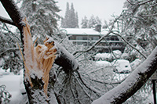
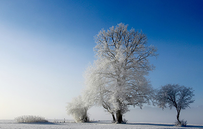

Every spring and summer we enjoy lush, full green canopies of trees. We relax in their shade and enjoy their beauty. Yet, every autumn, these gorgeous little appendages begin to die and fall to the ground. But why? Trees that lose their leaves every fall are known as deciduous trees. Most people are familiar enough with the term photosynthesis to know that it is the process in which trees convert air and water into oxygen and sugar to be used for growth and survival. Leaves are a crucial part of this process. If leaves are such a substantial part of the process that trees use to survive, how do they continue to live without them? Learning how deciduous trees survive winter is one topic that as one of the most popular tree companies in Ocean County, we love to discuss.
Tree Companies in Ocean County Know One Reason Trees do Anything is Defense
One of the main reasons that trees do anything is self-defense. Most of these defenses, however, happen without our knowledge. Trees can use chemicals and scents to defend themselves against predators and warn other trees of risks. Deciduous trees dropping their leaves is also a defense mechanism. Winters are rough on everyone and trees are no exception. The severity of the weather puts trees at risk of severe damage and even death. One way that trees defend themselves against these winter harms is with leaf loss. You can help your tree defend itself better by providing regular tre
e maintenance services from professional tree companies in Ocean County like us.
For one, a canopy full of leaves can cause even healthy trees to topple in the severe winter weather. In many areas, wind speeds can increase in the winter. A canopy with leaves can work as a sail using the trees own leaves to uproot itself. However, bare branches allow wind to more freely blow through them. We’ve all watched a tree bend during a winter storm. Imagine how much more severe that effect would be if the canopy was covered in leaves.

Plus, the weight of frozen leaves can be too much for a trunk to take. Ice and snow add a ton of weight onto branches and trunks. Even more weight piles on when the tree doesn’t lose its foliage. A snow laden leafy canopy is a sure way to make a tree top-heavy and greatly increases the likelihood of the tree falling.
Another reason losing leaves protects trees is it helps the tree to conserve resources. During winter in many areas, particularly the northern hemisphere, there is less rainfall. This means less water for trees. It also means leaves are not able to effectively do their job. Without water, photosynthesis cannot happen. Unable to use water to feed the tree, leaves then become a burden. Rather than spending the winter attempting to heal leaves that aren’t able to be saved, it is healthier and better for the tree to drop the leaves and become dormant.
What it Means for a Tree to be Dormant
While it is not the same as hibernation, the state of dormancy that trees go through in the colder months is similar in a number of ways. Hibernation is the state where endothermic animals reduce their metabolic activity in order to survive through times of reduced resources. Just as hibernation, a tree in a state of dormancy has reduced metabolic activity, as well as slowed growth and therefore limited energy usage. Areas of the northern hemisphere can have cold winters that last for months. Losing leaves is the first step of the dormancy process that trees use to adapt to the limited resources during winter. Now that the tree is not using energy for growth or to keep leaves alive, stored energy all goes into keeping the tree alive.

Don’t Be Sad to See Leaves Go Says Tree Companies in Ocean County
Even though the dropping of leaves seems like it is a sign that a tree is dying (and it could be in certain circumstances), when it happens in the autumn, it is simply a sign that a tree is preparing for winter. Another way your trees can better defend themselves in winter is with proper pruning and care. Removing overgrowth and excessive limbs protects the trunk and roots by allowing the tree to grow tall and strong. When it comes to tree companies in Ocean County, we’re a community favorite so contact us today if any trees on your property need professional care.